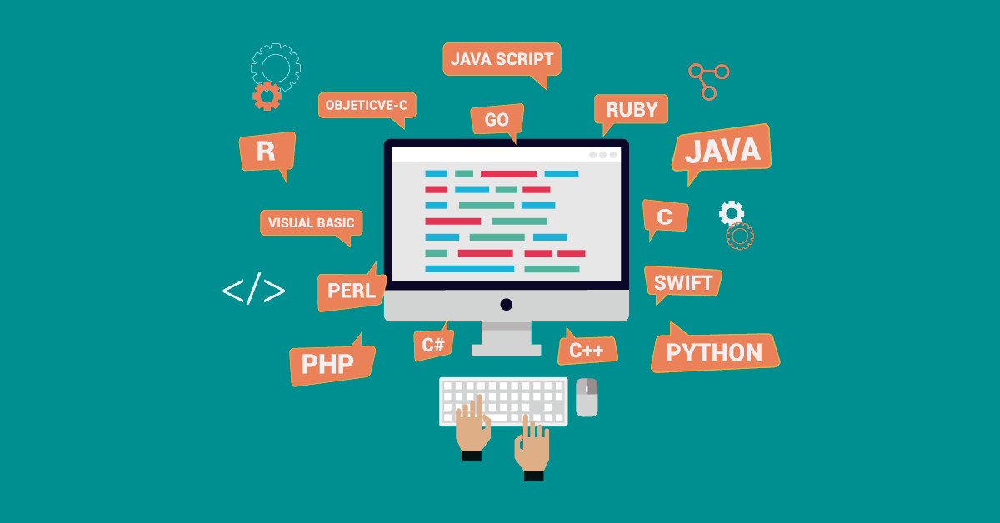

Técnicas de programação são métodos e abordagens para criar algoritmos eficientes, modularizados e fáceis de manter, utilizando estruturas como loops, condicionais, funções e recursividade. Elas focam na resolução estruturada de problemas, manipulação de dados, depuração (debugging) e otimização de código para aumentar o desempenho, frequentemente utilizando linguagens como Java ou Python.
 Modularização: Divisão de um programa grande em subprogramas menores e independentes (funções/procedimentos) para facilitar o gerenciamento.
Estruturas de Controle: Uso de condicionais (if/else, switch) e repetições (for, while) para controlar o fluxo lógico.
Algoritmos e Estrutura de Dados: Utilização de vetores, listas e dicionários para organizar dados e algoritmos de busca/ordenação (ex: QuickSort, MergeSort) para eficiência.
Recursividade: Função que chama a si mesma para resolver problemas complexos reduzindo-os a casos menores.
Refinamento Sucessivo: Técnica para detalhar algoritmos, começando com uma visão macro e detalhando os passos até chegar ao código.
Abstração: Focar nos aspectos essenciais de um objeto ou funcionalidade, escondendo complexidades internas.
Depuração (Debugging) e Testes: Técnicas para encontrar e corrigir erros (bugs) no código.
Programação Ativa: Digitar código manualmente em vez de copiar/colar melhora a memorização.
Método Pomodoro:Intervalos de 25 minutos de foco seguidos de pausas para manter a produtividade.
Estudo em 3 Etapas: Assistir sem anotar, reassistir anotando/praticando e, por fim, tentar refazer o código sem consultar.
Repetição Espaçada: Revisar conceitos ao longo dos dias para fixar o aprendizado.
Estas técnicas, aliadas à lógica de programação, permitem criar softwares mais eficientes e robustos.